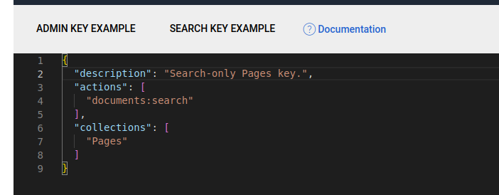
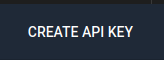

Searching #
To enable a basic traditional search (type a full query and execute once), create a controller and a route to it to respond to your search query (or use a page type with an action on it). For example:
Note that when you’re searching in this way, you’re making use of the project’s global Typesense::client() and performs searches using the super-admin key. While this is fine for backend use, you would not want to expose it to a front-end application. You would want to use a search-only key for this: see “Instantsearch” section below.
SilverStripe\Control\Director:
rules:
'search': 'YourName\YourProject\SearchController'
class SearchController extends Controller
{
public function index($request)
{
$client = Typesense::client();
$collectionName = 'Pages';
if($collectionName) {
$term = $request->getVar('term') ?? '*';
$searchParameters = [
'q' => $term,
'query_by' => 'Title, Content',
];
$search = $client->collections[$collectionName]->documents->search($searchParameters);
var_dump($search);
}
}
}
Creating a search only key #
In practice, you never want to expose your admin-only key in front-end forms. For public front-end searches you’ll need to obtain a search-only key from the Typesense server. While there are a number of ways to do this (including via the PHP SDK), the easiest is to use the Typesense dashboard:
|  |  |
|---|
Select “Search Key Example” and change the description and “collections” array to Pages (or the name(s) of the collection(s) this key will be searching) and select “Create API Key” in the bottom right. You’ll be shown the API key one time before it’s never shown again - record this value and save it in the TYPESENSE_SEARCH_KEY environment variable.
You’ll need to expose this key in a method somewhere, such as Page::getTypesenseSearchKey():
public function getTypesenseSearchKey() {
return Environment::getEnv('TYPESENSE_SEARCH_KEY');
}
Instantsearch #
You can set up Typesense to use Algolia’s Instantsearch library, using an adapter provided by Typesense.
- https://github.com/typesense/typesense-instantsearch-adapter
- https://github.com/algolia/instantsearch/tree/v4.44.0
Please note this is a development-only example and may be outdated. In a production environment you would not want to load external Javascript in this way, and ensure you’re working with a recent supported version.
Expose the search-only key in the HTML below:
<script type="application/javascript" src="https://cdn.jsdelivr.net/npm/instantsearch.js@4.44.0"></script>
<script type="application/javascript" src="https://cdn.jsdelivr.net/npm/typesense-instantsearch-adapter@2/dist/typesense-instantsearch-adapter.min.js"></script>
<header>
<div id="global-search-input"></div>
</header>
<div id="global-search-container" class="container d-none" data-typesense-search-key="$TypesenseSearchKey">
<div class="row">
<div class="col-12">
<h3>Results</h3>
</div>
<div class="col-3">
<div id="global-refinementList-Tags"></div>
</div>
<div class="col-9">
<div id="global-stats"></div>
<div id="global-hits"></div>
</div>
</div>
</div>
document.addEventListener("DOMContentLoaded", function(event) {
let typesenseApiKey = document
.getElementById('global-search-container')
.getAttribute('data-typesense-search-key');
const typesenseInstantsearchAdapter = new TypesenseInstantSearchAdapter({
server: {
apiKey: typesenseApiKey, // Be sure to use an API key that only allows searches, in production
nodes: [
{
host: 'your-external-ip-or-dns-name',
port: '8108',
protocol: 'http',
},
],
},
additionalSearchParameters: {
queryBy: 'Title,Content,Tags'
},
});
const searchClient = typesenseInstantsearchAdapter.searchClient;
const search = instantsearch({
searchClient,
indexName: 'Pages',
});
search.addWidgets([
instantsearch.widgets.searchBox({
container: '#global-search-input',
showSubmit: false,
showReset: false,
placeholder: 'type in a search term... ',
autofocus: true,
cssClasses: {
input: 'form-control me-2 w-100',
loadingIcon: 'stroke-primary',
},
}),
instantsearch.widgets.infiniteHits({
container: '#global-hits',
cssClasses: {
list: 'list-unstyled',
item: 'd-flex flex-column mb-5',
loadMore: 'btn btn-secondary d-block mt-4',
disabledLoadMore: 'btn btn-light mx-auto d-block mt-4',
},
templates: {
item: (data) => {
return `
<article>
<h3><a href="${data.Link}" target="_blank">${data.Title}</a></h3>
<p>${data._snippetResult.Content.value}</p>
</article>
`;
},
empty: 'No results found for <q>{{ query }}</q>. Try another search term.',
showMoreText: 'Show more results',
},
}),
instantsearch.widgets.stats({
container: '#global-stats',
templates: {
text: ({ nbHits, hasNoResults, hasOneResult, processingTimeMS }) => {
let statsText = '';
if (hasNoResults) {
statsText = 'no results';
} else if (hasOneResult) {
statsText = '1 result';
} else {
statsText = `${nbHits.toLocaleString()} results`;
}
return '';
},
},
cssClasses: {
text: 'text-muted',
},
}),
instantsearch.widgets.refinementList({
container: '#global-refinementList-Tags',
attribute: 'Tags',
searchable: true,
searchablePlaceholder: 'Search tags',
showMore: true,
limit: 10,
showMoreLimit: 100,
operator: 'and',
cssClasses: {
searchableInput: 'form-control form-control-sm mb-2',
searchableSubmit: 'd-none',
searchableReset: 'd-none',
showMore: 'btn btn-secondary btn-sm',
list: 'list-unstyled',
label: 'd-flex align-items-center mb-1',
count: 'badge ml-2',
checkbox: 'mr-2',
},
})
]);
search.start();
document.getElementById('global-search-input').addEventListener("keyup", (event) => {
const searchContainer = document.getElementById('global-search-container'),
layoutContainer = document.getElementById('layout-container'),
inputContainer = searchContainer.querySelector("input");
let inputLength = search.helper.state.query.length;
if(inputLength > 0) {
searchContainer.classList.remove('d-none');
layoutContainer.classList.add('d-none');
} else {
searchContainer.classList.add('d-none');
layoutContainer.classList.remove('d-none');
}
});
});
</script>
InstantSearch has many different configuration options that are beyond the scope of this documentation. A good open-source example application for how to achieve this can be found at https://findxkcd.com. Source